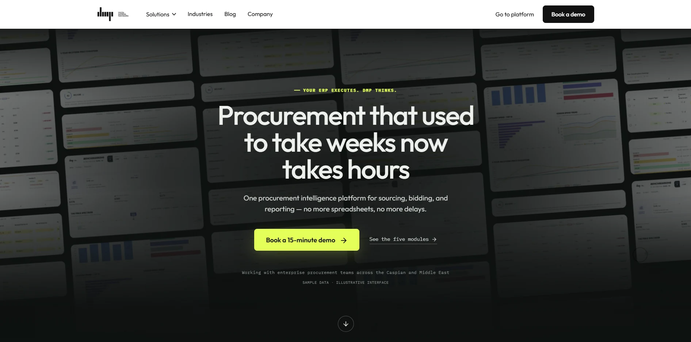
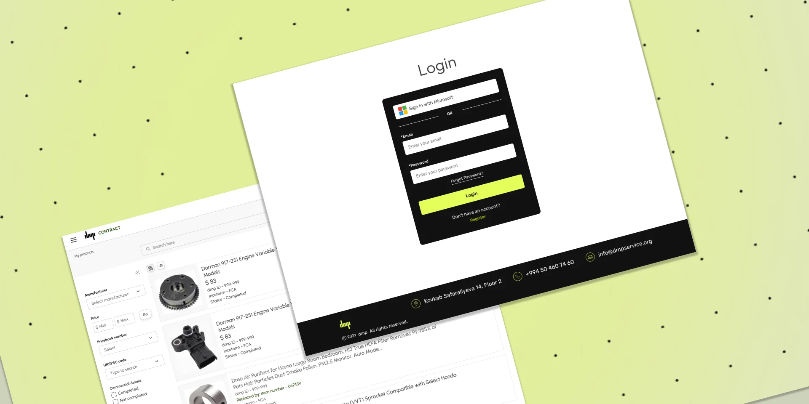
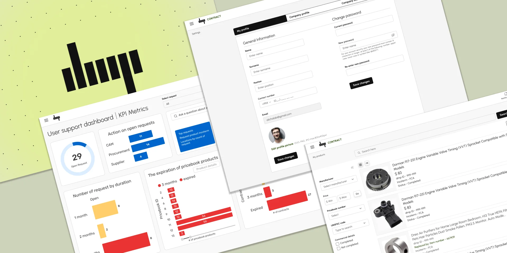

dmp: Digital Material Purchasing
A procurement and supply chain platform for organizations that need faster, more transparent purchasing decisions.
- Role
- Product designer
- Domain
- Procurement, supply chain
- Scope
- Demand planning to contract
- Status
- In progress

Overview
I’m currently designing the user experience for dmp, a platform that streamlines procurement and supply chain operations through powerful digital tools. The platform is built for organizations seeking smarter, faster, and more transparent decision-making in their procurement processes.
As the product designer, my focus is on creating a seamless, professional interface that supports users from demand planning to contract finalization—ensuring clarity, control, and confidence every step of the way.

User-Centered Design: Putting People First
Our design process is deeply rooted in user-centered thinking. We’ve conducted interviews and usability tests with procurement professionals to understand their daily challenges and expectations. The result is a clean, intuitive interface that minimizes friction and enhances task efficiency.
Every module—whether it’s for demand planning, sourcing, contract or budget management—is built with accessibility, consistency, and user empowerment in mind. We continuously refine the design based on real-world feedback to ensure it truly serves its audience.

Enhancing the User Experience with Smart Features
To elevate the platform beyond just usability, we’ve focused on integrating smart, AI-powered features that make every interaction more meaningful and efficient. Our goal is to transform DMP Service into more than a tool—it’s a strategic assistant that empowers users to work smarter, not harder. One of the key innovations is intelligent contract suggestions, which help streamline legal processes by offering pre-filled templates and relevant clauses based on previous usage and project context. We’ve also implemented demand forecasting tools that analyze past procurement data to predict future needs, enabling better planning and resource allocation.
The platform offers real-time insights on supplier performance, allowing users to make data-driven decisions with confidence. From auto-prioritized bid evaluations to dynamic dashboards that visualize KPIs, we’re designing with the mindset that smart systems should simplify complexity. These features are built to support professionals in making faster, more informed choices while reducing cognitive load. By embedding intelligence directly into the UX, we’re not only improving the flow of work but also shaping a future-ready experience that adapts and evolves with user needs.